Monochrome (narrowband) imaging is used to increase sensitivity and detail.
The main types of filters are:
Ha - ionized hydrogen.
Sii - ionized sulfur.
Oiii - ionized oxygen.
By mixing different combinations of images from different filters, a very large number of colors can be obtained in the resulting image.
SHO:
If images is not aligned (you can check this by quickly switching between images. If the stars move, the images are not aligned).
Otherwise, you can skip this step.
Drag-and-drop images to the conversion:
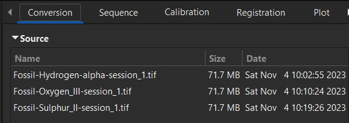
Remember the name and location of the files!
For me this is Ha – 1, Oiii – 2, Sii – 3.
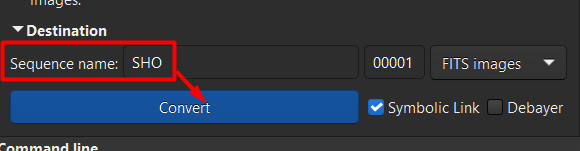
Now let`s go to the registration:
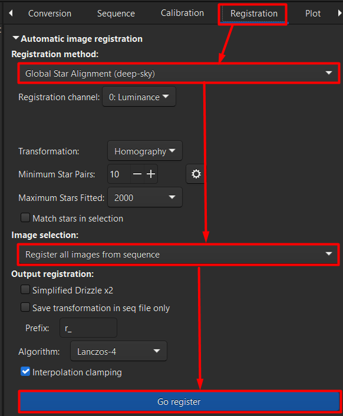
Now you have 3 aligned images, rename according to the conversion names (Ha – 1, Oiii – 2, Sii – 3):
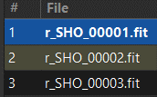
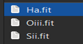
Now let`s stretch the images.
Open Ha image and press histogram transformation:
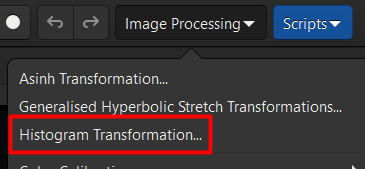
Press autostretch, apply and close.
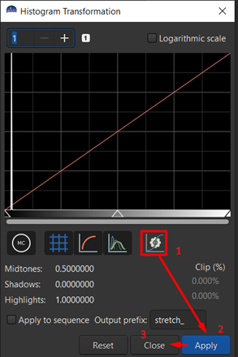
If your images are initially aligned, save as FITS 32 bit, otherwise just click the Save button:
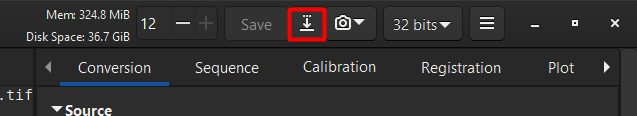
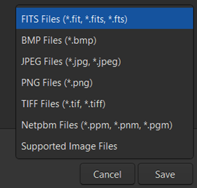
Make name more readable (don`t forget filter naming):
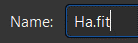
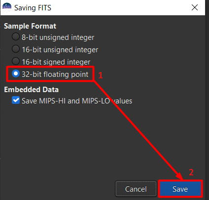
Repeat this step for other images.
After stretching let`s combine it:
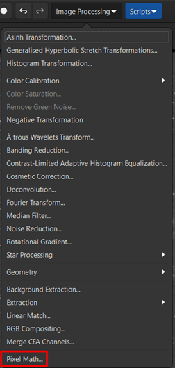
Uncheck “Use single RGB/K expression” and press + sign:

By Shift+Left mouse click select all images and press Open:
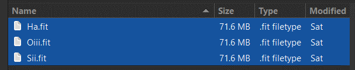
By double-clicking change names of this variables according to the naming of images:
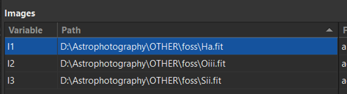
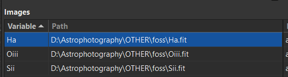
Now let`s add SHO formula:
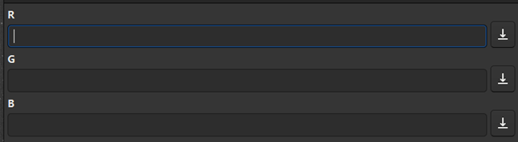
R:
.6*Sii+.4*Ha
G:
.7*Ha+.3*Oiii
B:
Oiii
Please note that these are very conditional formulas! Ideally, you should change the settings depending on the DSO, as this is all very individual!
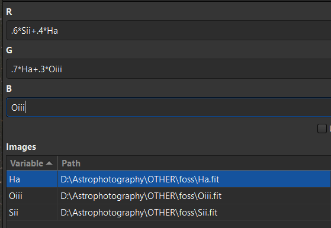
Then press Apply and close:
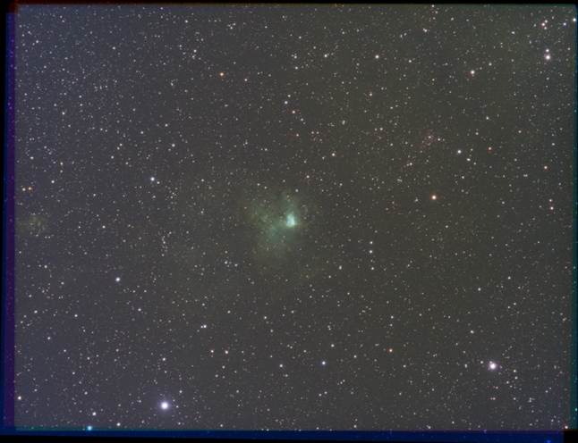
Now process this as normal DSO =) Remember that the image is ALREADY prestretched!
Contributors:
careless25, Lazulkat